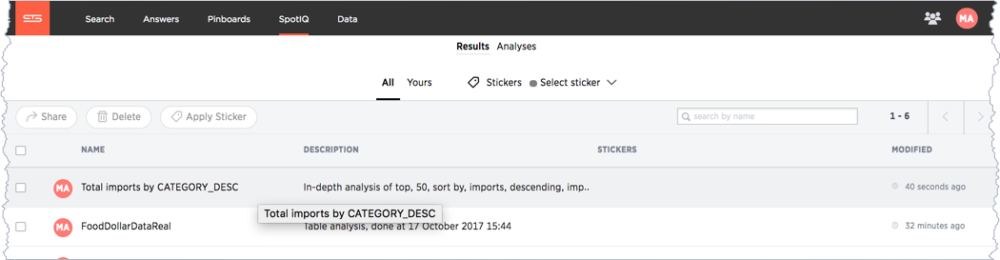
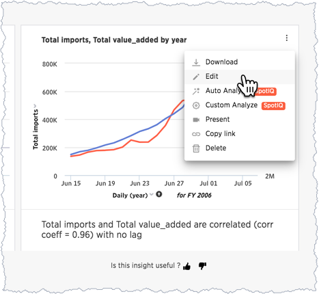
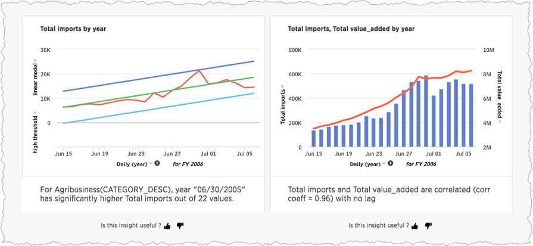
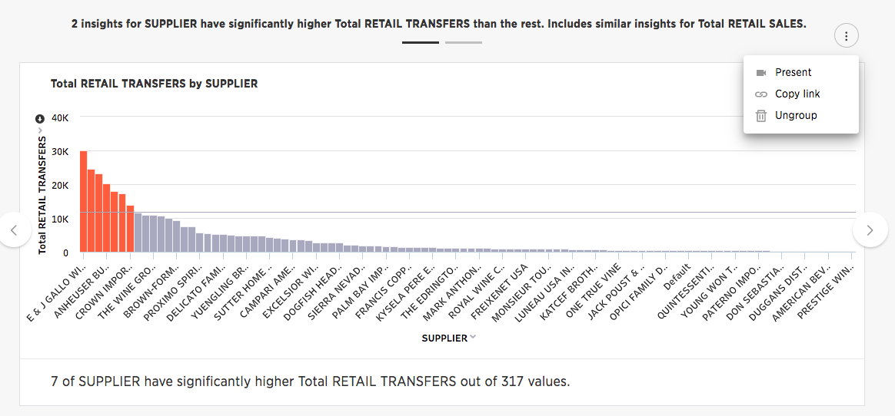
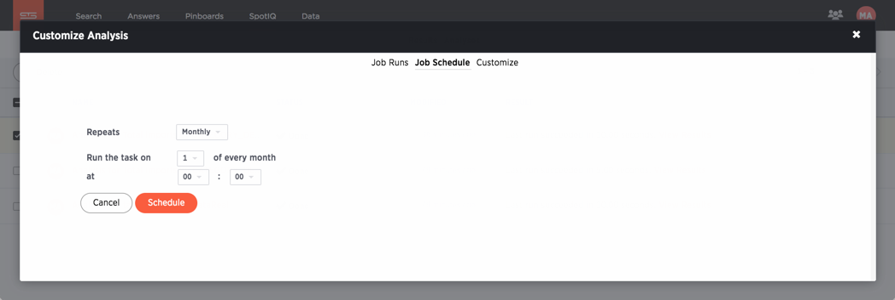
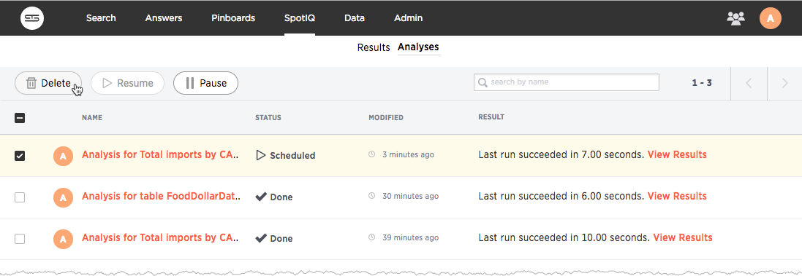

SpotIQ 101: Do more with SpotIQ
You’ve finished the second part of the tutorial. In this, the third and final part, you can learn how to modify a SpotIQ analysis to extend or customize the analysis. You can edit an insight to customize the chart it uses, or modify the Search syntax behind it.
Customize an analysis
In the second part of the tutorial, you reviewed the first output from SpotIQ. The outlier insights weren’t really that useful. Let’s try to dig deeper into that.
-
Scroll down to the outlier section.
-
Select the first insight.
-
Choose the menu and select Auto Analyze.

The system responds by starting a new insight run based on the single chart. Each time you request a change to the analysis settings, it starts another run.

-
Return to the SpotIQ page and select your new analysis.
 -
Open the analysis and review the analysis details.

If you recall, the first run against this data SpotIQ ran through 20 combinations and discovered 14 insights. In this second run against one table, SpotIQ ran 49 combinations and developed 17 insights. Only 4 insights were discovered.
Running SpotIQ again does not necessarily result in fewer runs or even, as in this case a reduced number of insights. It changes the analysis though, by selecting the single insight from your first run, you gave SpotIQ information it could use to focus the next run.
Continue with the customization.
-
Choose Customize Analysis.
The Customize Analysis dialog appears.
-
Select the Customize algorithms tab.
-
Uncheck the Outlier Detection using Z-Score option.
-
Click ANALYZE.
SpotIQ starts a new analysis.
-
Open the new analysis from the SpotIQ page.
Notice that the new analysis has the same name as the last one you ran. The new results include an outlier, and a cross-correlation. These new charts show a definite outlier,
6/30/2005.
The changes you make in this step persist on the underlying data for all your future analyses. You can unset these values by going back into the dialog and removing what you set.
A temporary customization for a single insight
Finally, you might have noticed the thumbs at the bottom of each insight. Use the thumbs up to tell SpotIQ you like the data insight. Clicking thumb’s down display an Improve Analysis dialog:

You can exclude a value from this individual analysis and rerun the analysis. Unlike the Customize Analysis action, this action works only on this analysis and does not persist.
Try this for yourself later at some point.
Modify an insight search and visualization
The lines used in the cross-correlation are somewhat ambiguous. A different visualization may help in this case. You can also modify the charts you see in your results. Try this now.
-
Select the menu on the Total imports, Total value_added by year chart.
-
Click the chart menu and choose Edit.
The Edit Visualization appears. The layout is familiar to any user that has run a ThoughtSpot search or worked with a result. This is dialog reveals the Search syntax used to generate the insight. You can use this dialog to do all the things you would normally do with a search.
-
Edit the search bar and remove
table_numfrom the search.The
table_numisn’t strictly necessary in the data.
-
Select the chart icon and choose Line Column to change the visualization.

-
Choose .
-
Close the dialog by pressing the Close.
The chart with your changes now appears in the SpotIQ list. The outlier stands out very clearly now in both charts.

Present your insights
You can present SpotIQ insights in several ways. You can present an individual result, or all of them. You can package all the insights in a PDF. This is useful for passing a packet of results. Since any insight reflects the data at a specific point in time, always consider saving the insight as a PDF.
-
Locate the Actions menu on the corner of the SpotIQ page.
-
Choose from the menu.
The system downloads a file containing all the insights. Keep in mind this file can be very large if there are a lot of insights found in your data.
You can use the Present action to view visualizations that appear in a carousel, and present them as a group.
-
Scroll down to the first carousel with your new charts.
-
Roll over the right corner of the menu to reveal the menu.
 -
Choose Present from the menu.
Click through the carousel with the next / previous arrow buttons, or use the left side menu of chart names.
Also, each individual chart has a Download, Present, or Copy link action you can take.
Schedule a recurring analysis
If you find an analysis configuration that is useful. You can run that configuration periodically. This is a good thing to do of course as, in a business, data changes all the time.
-
Go to the SpotIQ page.
-
Choose the Analysis tab.

-
Click the latest Total imports by CATEGORY_DESC analysis.
The Customize Analysis dialog appears.

-
Choose the Job Schedule option.
-
Fill out the schedule to run the job Monthly.
Every month SpotIQ will update your analysis with new data.
Keep in mind that SpotIQ jobs take resources in your system. So, you really don’t want to leave casual jobs running in the system. Go ahead and delete this latest job. Now that you know how to schedule a job, it isn’t needed anymore.
-
Click the checkbox for the job you just scheduled.
-
Click Delete to remove it.

Congratulations!
Congratulations, at this point you’ve learned the basics of SpotIQ with ThoughtSpot. Throughout the application, you can find the SpotIQ icon on search answers, pinboards, visualizations, and data. Wherever you see this option, you can click to run suggested or custom analyses, and get new insights on the SpotIQ page.